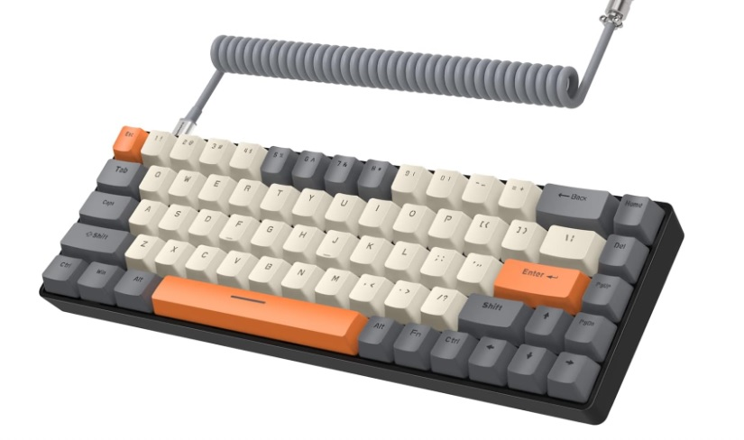

1. Logitech G413 SE
(1.482)The Logitech G413 SE stands out as an exceptional gaming keyboard, offering a winning combination of performance and style. Its sleek and modern design, featuring a brushed aluminum top plate, not only delivers a premium aesthetic but also enhances the overall gaming experience. The Romer-G key switches are highly responsive and deliver a satisfying typing sensation, making it a top choice for both gaming enthusiasts and everyday users. More info
2. BLOOTH Gaming Keyboard
(323)The BLOOTH Gaming Keyboard emerges as a standout option in the competitive gaming keyboard market. Featuring a dynamic design and superior performance, this gaming keyboard not only enhances your gaming experience but also adds a touch of style to your setup. Its mechanical key switches are highly responsive, delivering the precise and rapid keystrokes that serious gamers require for an advantage in gameplay.
More info3. Ozone Gaming OZTACTICALSP
(1.059)The Ozone Tactical is a compact mechanical keyboard with a 65% form factor. Compatible with Windows, Mac, iOS, Linux, and Android, this keyboard's ideal size makes it a versatile choice for any setup, whether at home or in the office. Its portability is a key highlight, allowing you to take it with you wherever you go, thanks to its convenient and lightweight design. The Ozone Tactical is both lightweight and elegant, making it perfect for optimizing space efficiency while providing a comfortable and stylish typing experience.
More info4. Krom KASIC TKL
 (3.553)
(3.553)
The Krom KASIC TKL stands as a standout in the world of gaming keyboards. Its compact tenkeyless (TKL) design is a space-saving solution, making it a favorite among gamers and productivity users. The tactile and clicky mechanical switches offer a responsive and satisfying typing experience. This keyboard combines a compact design, durable construction, and customizable RGB lighting, making it an excellent choice for top-tier gaming performance. If you're in search of a gaming keyboard that excels in both form and function, the Krom KASIC TKL is a top pick.
More info5. YINDIAO T8
 (347)The YINDIAO T8 is a remarkable gaming keyboard, purpose-built to meet the demands of avid gamers. With a sleek and ergonomic design, it not only complements your gaming setup but also delivers exceptional performance. Equipped with responsive mechanical switches, this keyboard ensures precise and rapid keystrokes, giving gamers a competitive edge. With anti-ghosting and N-key rollover, it offers precision and reliability during gaming the card's content.
More info6. Dierya T68SE
(427)The Dierya T68SE is a compact and versatile gaming keyboard with hot-swappable Gateron switches for a personalized typing experience. Its RGB backlighting and customizable lighting effects enhance the gaming setup's aesthetics. The durable construction and aluminum top plate ensure longevity and reliability. With N-key rollover and anti-ghosting, every keystroke is accurately registered for competitive gaming.
More info7. Krom Gaming Keyboard
(3.553)The Krom Kernel TKL is the perfect gaming keyboard for those seeking not only speedy execution but also space efficiency on their desktop. As a mechanical keyboard, it is fully customizable without the need for additional software and omits the additional numeric section, allowing for quicker key presses. With the Kernel TKL, you can perform numerous actions in less time, and easily tailor its performance and appearance through simple keyboard shortcuts. Unlock enhanced productivity and a sleek gaming aesthetic with the Krom Kernel TKL, a mechanical gaming keyboard designed for optimization.
More info8. Logitech G915 LIGHTSPEED
(339)The Logitech G915 LIGHTSPEED keyboard is a top-tier gaming keyboard, setting new standards in performance and design. Its ultra-slim, premium appearance with a brushed aluminum top plate enhances any gaming setup. Featuring low-profile mechanical switches, it offers comfort and responsiveness. LIGHTSPEED wireless technology ensures rapid response times, rivalling wired connections. The customizable RGB lighting adds a vibrant atmosphere to gaming sessions. With dedicated macro keys and G-keys, it provides exceptional control. While it's a premium investment, the Logitech G915 LIGHTSPEED is a gem for gamers and enthusiasts seeking top-notch gaming peripherals.
More info9. Razer BlackWidow V3
(1.769)The Razer BlackWidow V3 is a powerhouse gaming keyboard, known for its durability and robust design, featuring a metal top plate. Its customizable RGB Chroma backlighting adds a visually stunning touch to any gaming setup. The tactile Razer Green mechanical switches offer a satisfying typing experience, making it ideal for gaming and productivity. With N-key rollover and anti-ghosting, it ensures precise and responsive performance, a crucial advantage in competitive gaming. The keyboard also boasts dedicated media controls, customizable macros, and an ergonomic wrist rest for added comfort.
More info10. Logitech G213 Prodigy
(7.733)The Logitech G213 Prodigy keyboard is an affordable yet impressive gaming keyboard suitable for those on a budget. It offers both functionality and aesthetics. Featuring responsive membrane switches, it's ideal for gaming and everyday use. Built-in media controls provide convenient access to volume and playback adjustments. Its spill-resistant design ensures durability during gaming sessions. Overall, the Logitech G213 Prodigy is a cost-effective gaming keyboard that strikes a balance between performance and affordability, making it an excellent choice for budget-conscious gamers.
More info